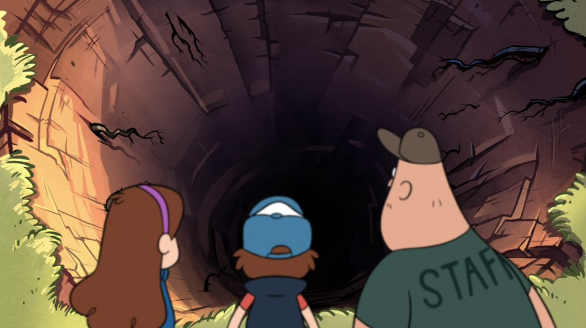

Create, Don’t Consume
We’re trading long-term fulfillment for short-term dopamine hits, and each trade makes the next one harder to resist. 2025-06-27

Introduction
Nothing technical today in the traditional sense; rather, I’ve come to share a bit of introspection. This morning I jotted down my “time wasters”—a list I feel almost anyone these days can relate to:
- not going to bed right away
- not waking up right away
- scrolling
- YouTube videos and short-form content
- Discord conversations
- using AI (*when passive)
Looking at this list, there’s a pattern I’ve been thinking about a lot recently: these are all low-effort activities that deliver quick dopamine hits. They feel rewarding in the moment, yet leave me empty afterward.
It’s rather obvious that if something wastes your time, it is preventing you from doing other things. And though they may present reward in the moment, later, all you feel is regret. I’m training my brain to want instant gratification over doing hard things. Each time I pick the easy dopamine hit, finding motivation for real work becomes that much harder.
And while I’ve identified this grouping of problems, I’m still far away from being able to conquer them myself.
Vocabulary
Let me introduce some vocabulary to clarify this pattern.
I’ll call these two opposing action sets consumptive versus generative behaviors:
Consumptive behaviors are low-effort activities that provide high momentary reward (scrolling feels good while you’re doing it) but offer little lasting reward (nothing meaningful to show for it afterward) and minimal dopamine upon completion (no real sense of accomplishment).
Generative behaviors require effort and sustained attention, providing low or delayed momentary reward (the work feels hard initially) but high lasting reward (real skills, relationships, health, accomplishments) and significant dopamine upon completion (genuine satisfaction from finishing something worthwhile).
The consumptive activities feel immediately rewarding but train your brain to crave easy gratification. The generative ones often feel difficult to start but gradually become more rewarding as your dopamine system recalibrates to appreciate sustained effort.
Down in a Hole
I am no psychologist, but I believe the key point is this: your brain actively fights against choosing generative behaviors. It has been conditioned to expect easy dopamine hits, so when faced with something that requires effort—even something you know will ultimately be more fulfilling—your mind will push you toward the consumptive alternatives. It wants its quick fix.
Daniel Lieberman calls this an “evolutionary mismatch”11 From Daniel Lieberman’s “The Story of the Human Body,” which explores how traits that evolved for ancestral environments can become problematic in modern contexts., and describes how behaviors that once helped us survive now work against our wellbeing. For most of human history, conserving energy and seeking quick rewards were essential for survival. Brains that chose certain, easy rewards over uncertain future benefits were the ones that lived to reproduce.
The struggle comes from processes running at different priority levels22 Though this cheeky computing metaphor simplifies the actual neuroscience, research on dual-process theory and ego depletion does show that conscious control requires more cognitive resources and can be overwhelmed by automatic processes, especially under stress or fatigue.: your evolutionary brain operates with high priority, optimizing for immediate survival, while your conscious mind runs in the background trying to optimize for long-term meaning and growth.
These consumptive behaviors often function as sophisticated counterfeits of the real thing. I recently stumbled across comedian Jimmy Carr in an interview (don’t bristle at the title! it’s a good video) and was genuinely surprised with what he had to say. He captured this perfectly: video games serve as “a proxy for career” while online porn acts as “a proxy for sex.” These activities provide the neurochemical rewards of real accomplishment and connection without any of the actual benefits. In his words, “George Orwell wasn’t right—our power won’t be taken away from us by some authoritarian master, we’re going to give it away for cheap dopamine.”
All of these consumptive behaviors (the scrolling, the videos, etc.) are forms of mental escape from the present moment. They pull us away from engaging with what’s actually in front of us.
This creates a dangerous cycle. The more you give in to consumptive behaviors, the harder generative ones become to start. Eventually, you find yourself in what feels like a dark, dull pit—going through the motions of easy pleasures that no longer even feel that good, while the meaningful activities that could lift you out seem impossibly difficult to begin. Like Huxley’s soma33 In Aldous Huxley’s Brave New World, soma is a drug that provides instant pleasure and escape, keeping citizens docile and preventing them from seeking deeper meaning. This book has frightened me far more than 1984 ever could., these easy pleasures numb us to the richer rewards that come from actual engagement with life.
Where I’m At
I wish I could offer a clear path forward, but honestly, I’m still working through this cycle myself. Part of me keeps hoping I’ll stumble across some font of inspiration that will suddenly make everything clear. I recognize real change requires the hard work of building new habits day by day. I’ve identified the problem and understand the psychology behind it, but I’m still in the messy middle of actually changing. I fall back into old patterns regularly, but I’m learning.
Given how ubiquitous these behaviors are, this seems to be the defining challenge of our digital age (especially with the emergence of AI, which can be profoundly consumptive when used as a replacement for thinking rather than a tool to enhance it).
I plan to revisit this post as I experiment with different approaches and hopefully develop some practical insights. For now, I have clearer language for what I’m fighting against. I’d be curious to hear what consumptive44 These activities aren’t inherently good or bad. Really, it depends on how you engage with them. Playing video games with friends can build real relationships; creating content on social media can develop genuine skills. What matters is whether you’re passively consuming or actively creating, connecting, and growing. patterns others recognize in themselves.